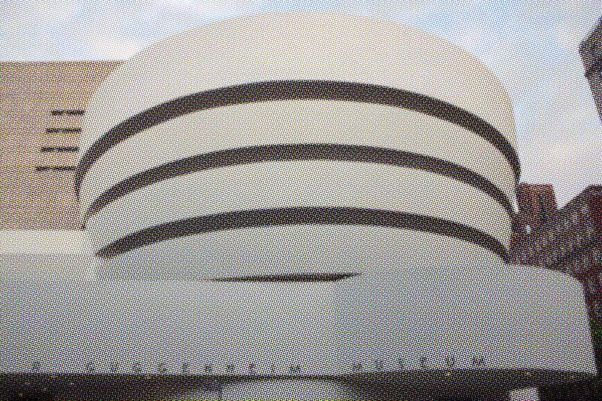
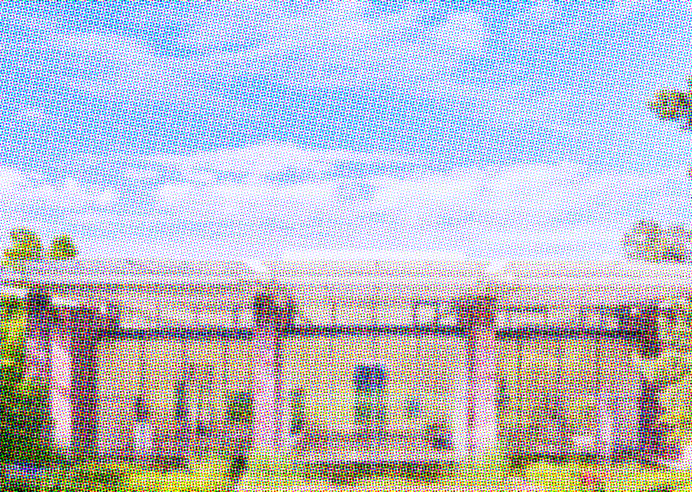
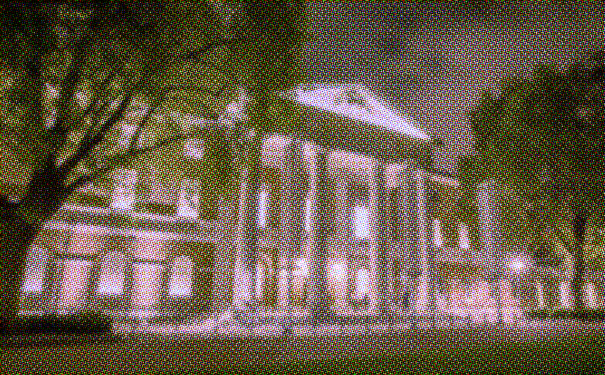
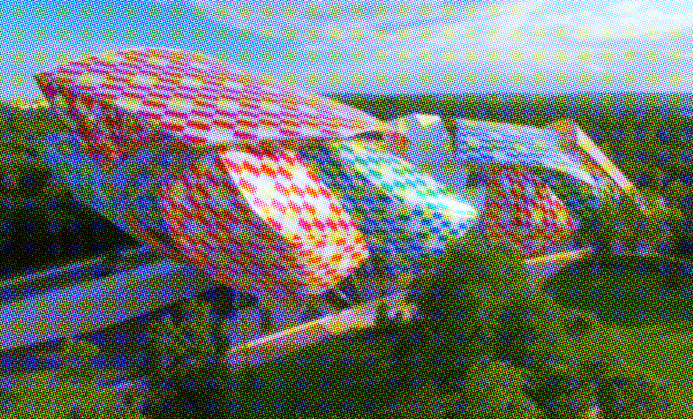
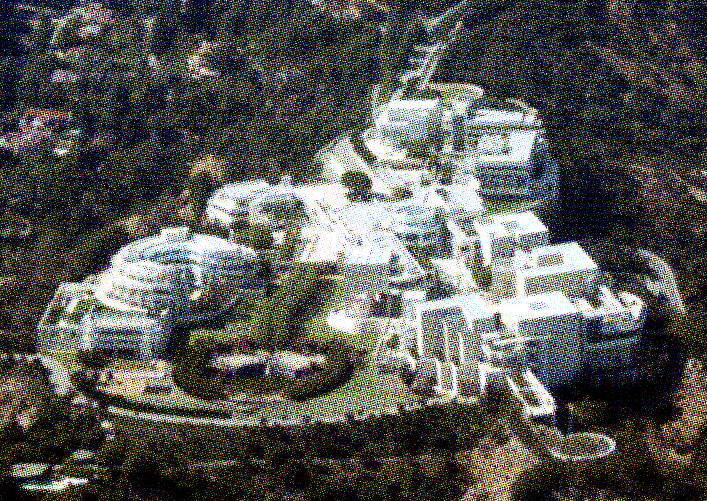
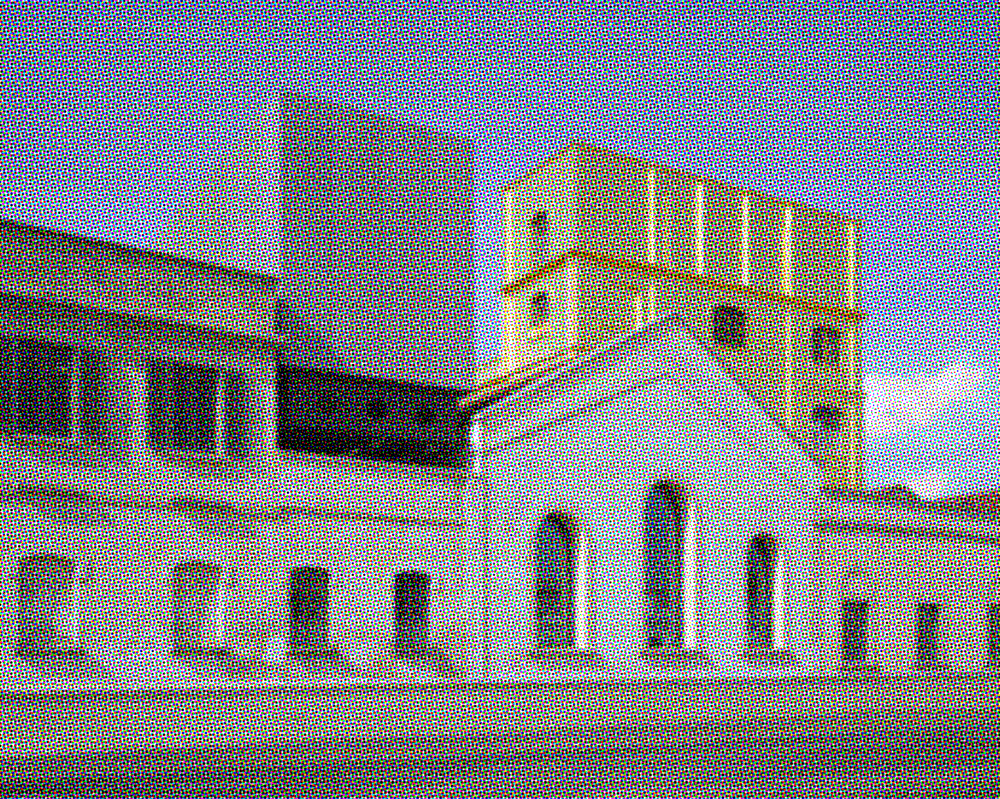

was a publication written, designed and produced by Rudolf Baranik, Sarina Bromberg, Sarah Charlesworth, Susanne Cohn, Carol Duncan, Shawn Gargagliano, Eunice Golden, Janet Koenig, Joseph Kosuth, Anthony McCall, Paul Pechter, Elaine Bendock Pelosini, Aaron Roseman, Larry Rosing, Ann Marie Rousseau, Alan Wallach, Walter Weissman. It was published in 1977 in New York City, on the occasion of the Whitney Museum’s decision to exhibit the private collection of John D. Rockefeller III.
was a publication written, designed and produced by Rudolf Baranik, Sarina Bromberg, Sarah Charlesworth, Susanne Cohn, Carol Duncan, Shawn Gargagliano, Eunice Golden, Janet Koenig, Joseph Kosuth, Anthony McCall, Paul Pechter, Elaine Bendock Pelosini, Aaron Roseman, Larry Rosing, Ann Marie Rousseau, Alan Wallach, Walter Weissman. It was published in 1977 in New York City, on the occasion of the Whitney Museum’s decision to exhibit the private collection of John D. Rockefeller III.
It raised concerns about the nature of private collections being presented to the public in an institutional context with a “neutral” point of view, when in fact, the singularity of the viewpoint of the upper class collector is anything but. There were obvious omissions in the Rockefeller survey of “American Art” in 1977: it was almost exclusively work of white, male artists. The apparent omission of BIPOC and female artists in a survey of “American Art” is therefore, political, incomplete and inherently unneutral and was the foundation of the protest and publication.
Collecting, in private, is one thing, and collectors can collect as they please, however issues of neutrality, taste and politics emerge when it’s presented within an institutional context as “official culture” (to use An Anti-Catalog
 vocabulary). In 2020, private museums have infiltrated most major cities. While museums of private collections have always existed (The Frick in New York; the Wallace in London), the main difference is that these older estates and collections were bequeathed upon the death of the collector. Now, museum megastructures are being erected while the collector is still alive, still collecting, still making career artists, still influencing the art market. Further, they present private collections within “official culture” – often unbeknownst to the visitor. Their collections are shrouded in 100 million dollar buildings, grandiose and important. Any city guide will include private collections alongside museums. They usually provide free admission, but only as a means to massive tax breaks (“educational”) and impose upon their visitors their tastes, their politics, their wealth.
vocabulary). In 2020, private museums have infiltrated most major cities. While museums of private collections have always existed (The Frick in New York; the Wallace in London), the main difference is that these older estates and collections were bequeathed upon the death of the collector. Now, museum megastructures are being erected while the collector is still alive, still collecting, still making career artists, still influencing the art market. Further, they present private collections within “official culture” – often unbeknownst to the visitor. Their collections are shrouded in 100 million dollar buildings, grandiose and important. Any city guide will include private collections alongside museums. They usually provide free admission, but only as a means to massive tax breaks (“educational”) and impose upon their visitors their tastes, their politics, their wealth.
So what happens when national museums can’t keep up? They are losing buying power to keep their collections up-to-date, they are locked into bequeathments and unable to deaccession work to release funds. They have to charge hefty entrance fees simply to operate. The number of Ultra-High-Net-Worth individuals globally today is unprecedented. When the Ultra-HNWI have seemingly unlimited means to acquire and collect, the private museum, driven by ego and taxes, begins to infiltrate “official” art-culture.
In 1977, when An Anti-Catalog
 was published, museums were described as “windowless tombs, bunkers or bank vaults”. In 2020 private museums take those forms quite literally: the Boros Collection in Berlin is a converted WWII bunker. Using starchitects like Diller Scofidio + Renfro (the Broad), OMA /Rem Koolhaus (Fondazione Prada) and Frank Gehry (Fondation Louis Vuitton Paris) – the buildings themselves become a sign to have and have not.
was published, museums were described as “windowless tombs, bunkers or bank vaults”. In 2020 private museums take those forms quite literally: the Boros Collection in Berlin is a converted WWII bunker. Using starchitects like Diller Scofidio + Renfro (the Broad), OMA /Rem Koolhaus (Fondazione Prada) and Frank Gehry (Fondation Louis Vuitton Paris) – the buildings themselves become a sign to have and have not.
Index
Fig. 1 – Hirshhorn Museum – Washington, USA: the Collection of Joseph H. Hirshhorn, endowed 1960s
Fig. 2 – The Boros Collection – Berlin, Germany: the Collection of Karen and Christian Boros, established 2008 
Fig. 3 – Glenstone – Potomac, USA: the Collection of Emily and Mitchell Rales, estb. 2006 
Fig. 4 – Newport Street Gallery – London, UK: the Collection of Damien Hirst, estb. 2014
Fig. 5 – Brant Foundation – New York City, USA: the Collection of Peter Brant, estb. 2019 
Fig. 6 – Solomon R. Guggenheim Museum – New York City, USA: the Collection of Solomon R. Guggenheim, estb. 1937 
Fig. 7 – Fondation Beyeler – Basel, Switzerland: the Collection of Hildy and Ernst Beyeler, estb. 1982
Fig. 8 – The Broad – Los Angeles, USA: the Collection of Eli and Edythe Broad, estb. 2015 
Fig. 9 – Saatchi Gallery - London, UK: the Collection of Charles Saatchi, estb. 1985
Fig. 10 – Palazzo Grassi - Venice, Italy: the Collection of François Pinault, estb. 2005
Fig. 11 – Bourse de Commerce – Paris, France: even more space for the Collection François Pinault, estb. 2020 
Fig. 12 – Fondation Louis Vuitton – Paris, France: the Collection of LVMH (Bernard Arnault), estb. 2014 
Fig. 13 – Mori Museum – Tokyo, Japan: the Collection of Minoru Mori, estb. 2003 
Fig. 14 – Magazzino Italian Art – Cold Spring, USA: the Collection of Nancy Olnick and Giorgio Spanu, estb. 2017
Fig. 15 – Rubell Museum – Miami, USA: the Collection of Mera and Don Rubell, estb. 1993
Fig. 16 – The J. Paul Getty Museum – Los Angeles, USA: the Collection of J. Paul Getty, estb. 1997 
Fig. 17 – Fondazione Prada – Milan, Italy: the Collection of Miuccia Prada and Patrizio Bertelli, estb. 2015 
Fig. 18 – Collection Lambert – Avignon, France: the Collection of Yvon Lambert, estb. 2000